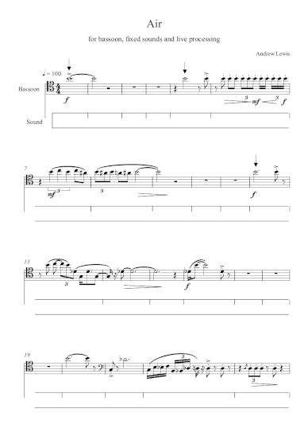

Date of composition: 2012
Overall duration: c. 8 min
Format: bassoon and electronics
Premiere: 8 May 2012,
Morelia, Mexico
Wendy Holdaway (bassoon)
CMMAS, Morelia, Mexico
Score: available soon from
Composers' Edition

Wendy
Holdaway rehearsing for the premiere of Air at CMMAS,
Morelia, Mexico
Programme note: (download as PDF)
Air